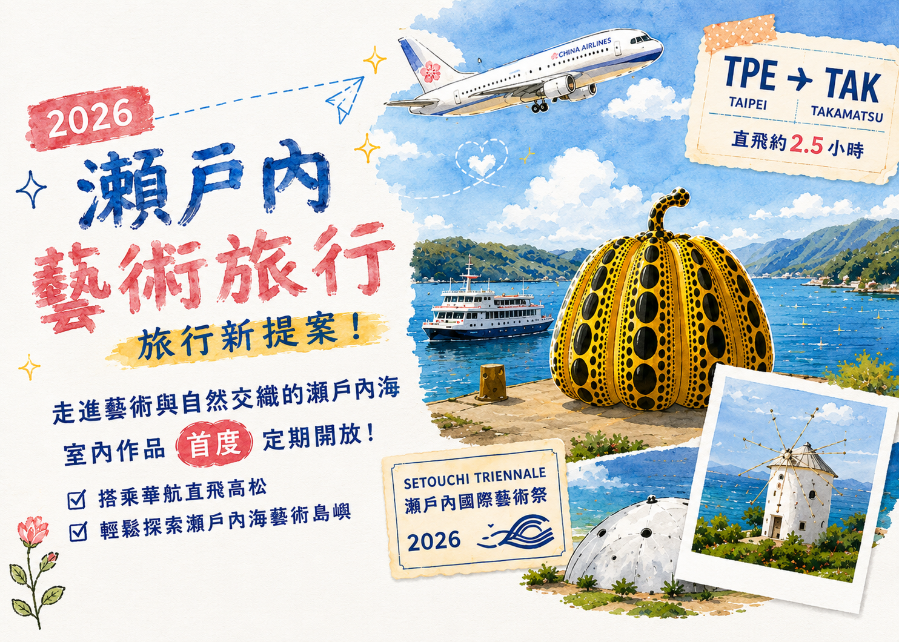
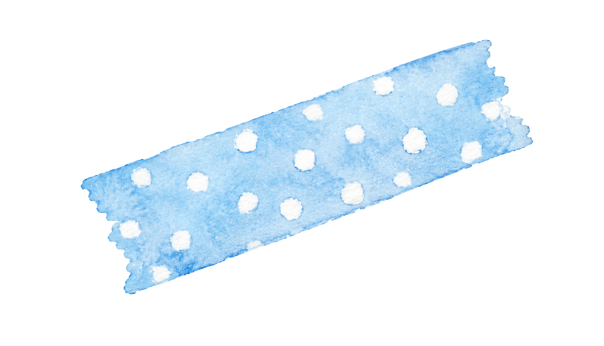
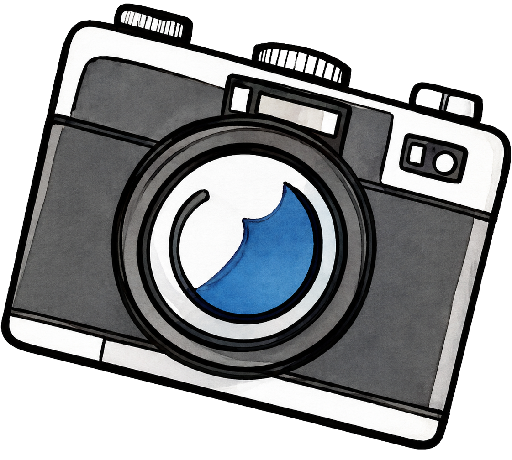
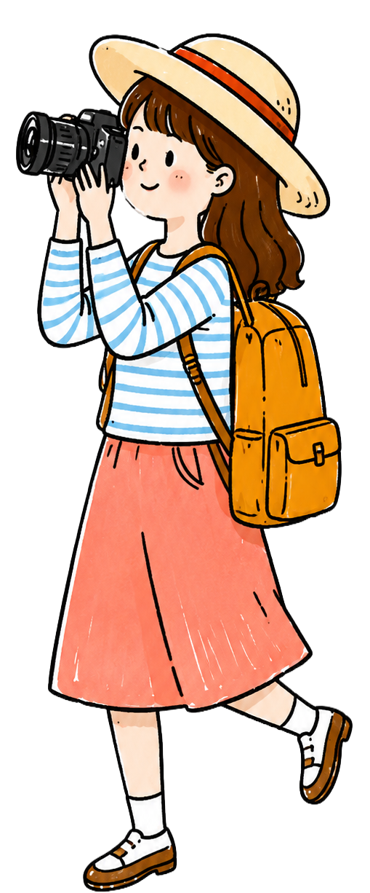
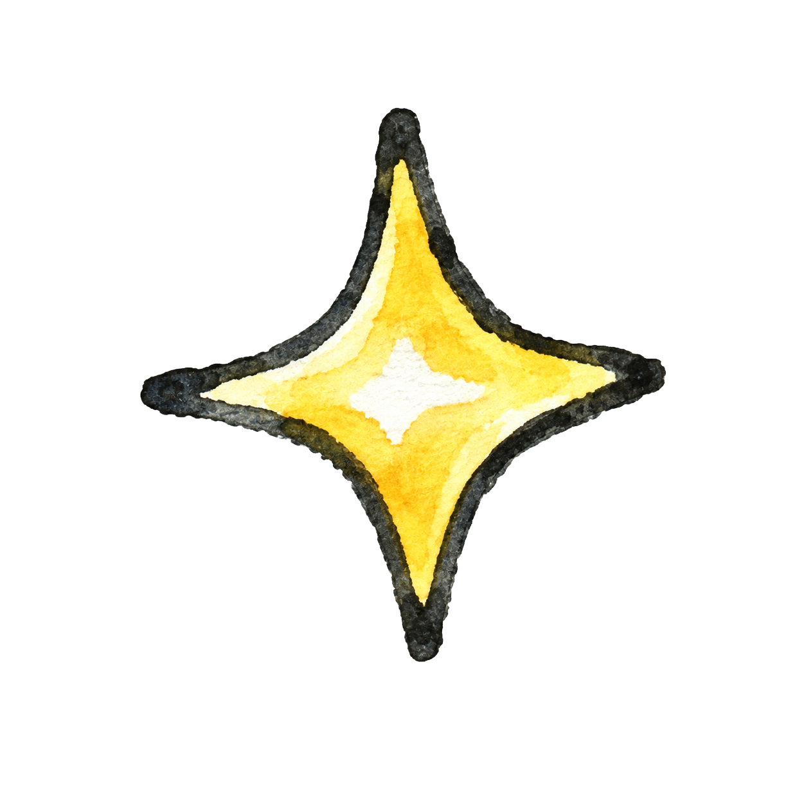
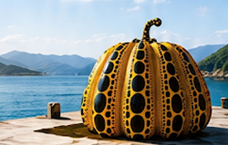
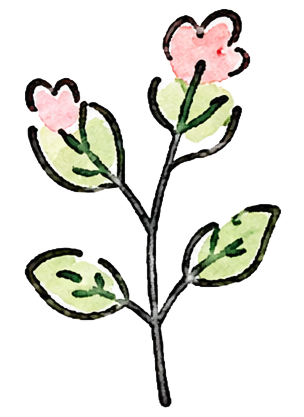
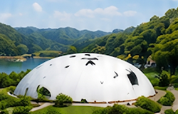
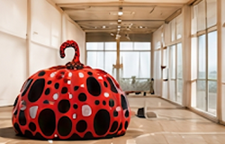
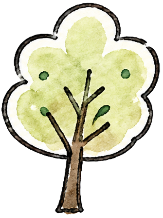

2026 瀨戶內藝術旅行 - 中華航空直飛高松全新提案
旅行新提案！走進藝術與自然交織的瀨戶內海
室內作品首度定期開放！搭乘華航直飛高松，輕鬆探索瀨戶內海藝術島嶼。



為什麼 2026 最值得去？



藝術祭首度
展期外開放
2026年起，豐島、女木島、男木島...等地的室內作品將於指定日期定期開放。
更多作品
看得到
過去只能在藝術祭期間欣賞，現在全年有更多機會造訪藝術島。
交通票券
更方便
女木島、男木島、小豆島、大島推出區域共通票券，一次探索多件作品。
必訪藝術島推薦
直島

- 黃南瓜
- 地中美術館

豐島

- 豐島美術館
- 鹽田千春《線的記憶》
女木島

- Leandro Erlich《不在的存在》
- Nicolas Darrot《Navigation Room》
小豆島
- 天使之路
- 橄欖公園
- 藝術作品巡禮

高松三大好禮
數量有限，送完為止！
01
機場巴士
機場巴士
來回乘車券
高松機場 ⇔ 高松市區
輕鬆往返，便利省時
輕鬆往返，便利省時
02
栗林公園
栗林公園
免費入場券
日本三大名園之一
感受庭園之美
感受庭園之美
03
小豆島免費
小豆島免費
來回船票
高松港 ⇔ 小豆島(土庄港)
跳島體驗，人氣藝術島
跳島體驗，人氣藝術島
4天3夜 推薦行程
DAY 1
高松市區
- 栗林公園
- 北濱Alley
- 高松商店街
DAY 2
小豆島一日遊
- 天使之路
- 橄欖公園
- 藝術作品巡禮
DAY 3
豐島 + 女木島
- 豐島美術館
- 海景咖啡廳
- 港口散策
DAY 4
高松散步·回程
- 北濱Alley
- 高松港散步
- 伴手禮選購
香川必訪景點推薦
栗林公園
米其林三星級
日本最美庭園
日本最美庭園
小豆島
天使之路・橄欖公園
必訪人氣景點
必訪人氣景點
高松港
瀨戶內海跳島旅行
的起點
的起點
豐島
自然與藝術共存
療癒之島
療癒之島
旅客常見問題 FAQ 💬
Q1高松有哪些必去景點？
推薦栗林公園、小豆島、豐島、女木島、高松港、北濱Alley等景點。
Q2瀨戶內藝術祭展期外可以參觀嗎？
可以！2026年起，部分室內作品首度定期開放參觀。
Q3如何前往小豆島？
從高松港搭乘渡輪往土庄港，航程約60分鐘。
Q4高松自由行建議幾天？
建議安排4天3夜～5天4夜，可深度體驗藝術島與海景美食！